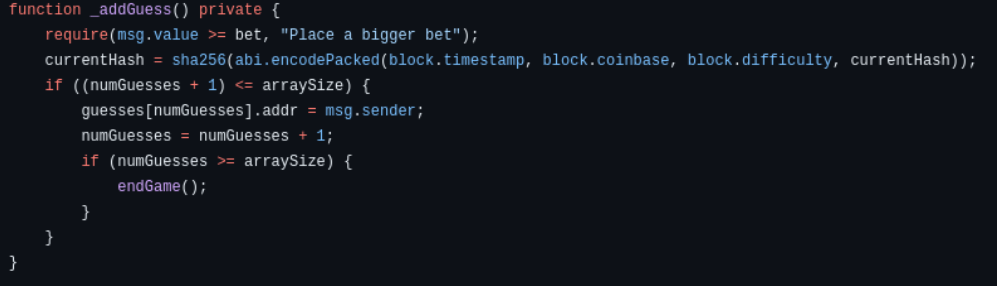
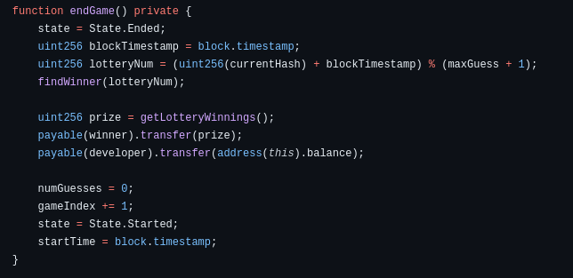
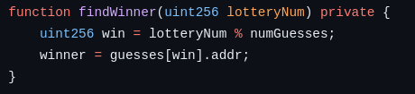
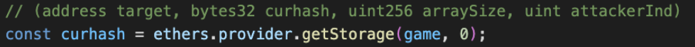
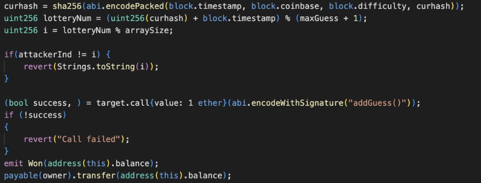

The Ethereum blockchain has a variety of uses beyond decentralized finance and cryptocurrency due to the ability
to develop decentralized applications, or dapps, that run on the Ethereum network. One category of dapps is
blockchain games, ranging from RPGs to card games. Many popular games follow the play-to-earn (P2E) model where
the game allows players to win Ether. One such game, which is no longer available to play, is a lottery-style
game known as 1000 Guess, initially deployed in 2017.
Players in this game bet on their position in the sequence of players, for example, if a player was the fifth to
place a bet, their guess is 5. Once 1000 bets are placed, the smart contract calculates the winning guess and
awards that player all the Ether stored in the contract from previous bets.
Background
A variable in Solidity, the language used to develop smart contracts on the Ethereum blockchain, can have one of
three visibility levels: public, private, and internal. Public variables are accessible to anyone, including users
of the contract and other contracts. Private variables are intended to only be read by the contract using them, although
as a result of deployment on the public blockchain, these variables are not truly private. Internal variables are
intended for the contract and contracts that inherit from it to use.
Despite attempts to obscure private variables from direct public access, there are still options to access them through
Ethereum libraries such as ethers.provider.storageAt() that allow developers to inspect storage slots within smart contracts.
Variables in Solidity smart contracts are stored sequentially in 32-byte increments, and when the contract code is publicly
on the blockchain, it is possible to calculate the storage location of the private variable and retrieve the value.
Pseudo-random number generators (PRNGs) are deterministic algorithms that output a seemingly random sequence of numbers.
When initialized with the same seed value, a PRNG will output the same sequence of numbers. For applications where a truly random
number is needed, such as for secure cryptography or chance-based games like 1000 Guess, a PRNG is not sufficiently random because
the output can be determined if the seed is known.
Vulnerability in the Game
A vulnerability discovered in 1000 Guess underscores the challenges of maintaining privacy in blockchain applications.
The mechanism used to determine a winner after the thousandth bet has been placed is based on a pseudo-radom number
generator that calculates the seed from a private variable and several block variables. All contract variables, including
the supposedly private seed, were public on the blockchain ledger, making it possible for knowledgeable users to analyze
this information and predict outcomes before the game was finished.
Each time a bet is placed, the contract calculates the hash of the block timestamp, block coinbase value, block difficulty,
and the hash associated with the previous bet. After the final bet is placed, the hash calculated at that time is used as the
seed to the PRNG to determine a winner. It was thought that the sequential calculation of the hash would mean that it was
impossible to guess the winner before every bet was placed, however, as discovered in
CVE-2018-12454, an attacker can pre-calculate which number will win before the
final bet is made. For each round of the game, this malicious player will wait until 999 bets have been placed, predict the
winning number, and if the 1000th bet is going to be the winner, they will bet on the contract and obtain the winnings.
This method ensures that the attacker never places a bet if they are not going to win.
Our Implementation
In this project, my group and I implemented a version of the original, vulnerable 1000 Guess game in modernized Solidity;
developed the attack described in
this article; then created a secure version of the game that does not rely on private variables to seed the PRNG.
Phase 1: Game Implementation
The game was implemented as a modified version of the 1000 Guess game originally playable on the blockchain before the
identified vulnerability caused it to be shut down. In the original game, once 1000 players placed a bet, a function
would calculate a winner and reward them with the entire value of the contract minus a developer fee. For this project,
the contract was modified to calculate a winner after the 10th player's bet for ease of testing.
The contract accepts bets from players, and after the 10th player, it uses a combination of internal variables and
characteristics of the current block to determine a winner out of those who have bet. When created, it was assumed that
since the variables were private, one could not read them to calculate the winning position before the game concluded.
When a bet is placed, the addGuess() function is called. This updates the value of currentHash, the calculation of
which is shown in Figure 1. If this guess is the 10th, it then uses this value to calculate the winning position in an
array of betters.
Figure 1: addGuess() and calculation of currentHash

Figure 2: Calculating lotteryNum to decide the winner

Figure 3: Using lotteryNum to get winner in an array of players

Phase 2: The Attack
The attack involved using the ethers library with a Hardhat typescript project to access private variables stored in the
smart contract of the 1000 Guess game. By obtaining the current hash variable from the game's contract, we were able to
calculate the random number that determines the winning player's index. Since we developed the code for the modified version
of 1000 Guess, we knew how the random number used as a seed value was generated and could apply the same algorithms.
In a version of the game published on the Ethereum blockchain, the code would be available for anyone to view. The seed value,
or the currentHash value, is generated using the SHA256 hash function applied to specific block information including the
timestamp, Coinbase (address receiving mining rewards), difficulty level, and hash of the previous guess, which is accessed
through the storage function. This hash value is then used with modulus division to determine the final indes that corresponds
to the winning guess.
The attack strategy involved checking whether the last guess would result in a win. If it did, the attacker would place the final
guess and secure the lottery winnings. On average, this would result in the attacker winning the money 1/10th of the time
in the modified version of the game.
Figure 4: Accessing private variables

Figure 5: Calculating winning bet

Phase 3: Secure Game
Utilizing Chainlink VRF and the Remix online Solidity editor, a secure version of the 1000 Guess game was implemented.
This allows our contract to obtain a securely generated random number that is not calculated from variables accessible
in the contract. The developer sets up a Chainlink subscription, and the secure contract is established as a consumer,
as shown in Figure 6. By inheriting from the VRF2.0 Consumer contract, the secure 1000 Guess contract is able to use
the subscription after being deployed with the subscription ID.
Using a blockchain oracle to provide verifiable random numbers avoids any attack that relies on the use of hard-coded
or insecurely stored private variables to determine the winner.
Project Code
https://github.com/qu3ri/Attacking-1000-Guess
This project was a joint effort by Kyri Lea, Domenic Lo Iacono, and Sierra Kennedy